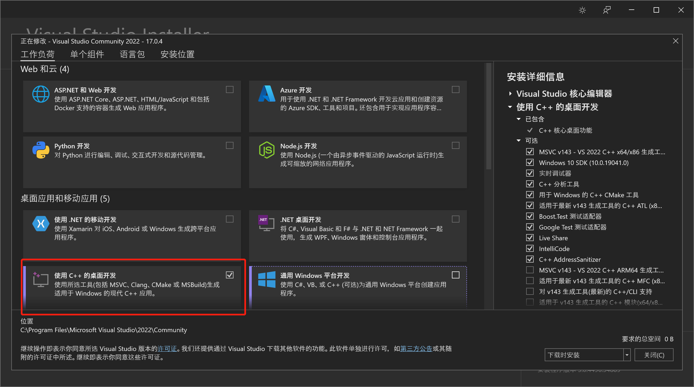

RedisDesktopManager编译
RedisDesktopManager是我平时工作中特别喜欢的Redis工具，有一个遗憾就是作者开放了RDM的源代码，但没有提供对应的二进制包。本文就如何通过SourceCode编译到Windows下的可执行文件做一个记录。
在此感谢RedisDesktopManager的作者Igor Malinovskiy
前言
RDM已经提供了编译安装方法,只是提供的步骤比较简单，中间略过了很多步骤，本文将完整的编译过程记录下来。
本次编译过程基于RedisDesktopManager（2021.10）
环境准备
系统
Windows 10 21H2
git clone
- 使用以下命令clone RedisDesktopManager的项目仓库
git clone --recursive https://github.com/uglide/RedisDesktopManager.git
- 需要注意submodule处理
- RedisDesktopManager包含submodule，在3rdparty下
- submodule里面也包含submodule，如3rdparty/qredisclient/hiredis等
- 需要使用--recursive递归clone
- 如果没有使用--recursive来clone，需要人为保证submodule都down下来了
完全clone的仓库一共277兆，包含3058个文件和610个目录
Microsoft Visual Studio Community 2022 (64 位)
下载VS2022社区版在线安装包，选择使用C++在线安装

下载QT5.15
Qt5.15只能在线安装，下载qt-unified-windows-x86-4.2.0-online.exe。需要安装Qt5.15和Qt charts
Qt下载时间很长，网不好容易断，请保持耐心
Python 3.9.9
下载Python3.9.9，需要注意
- Python要安装到
指定目录，不然后面需要手动指定Python的位置
Cmake
下载Cmake，一路next就行了
nuget
下载nuget.exe，放到3rdparty下
Python依赖安装
使用以下命令安装Python依赖
pip3 install -r src/py/requirements.txt
如果出现git仓库SSL握手失败，可以将requirements中git的https协议换成git协议。
- 原始requirements内容
bitstring
cbor
msgpack
git+https://github.com/mrnom/phpserialize.git#egg=phpserialize
git+https://github.com/uglide/redis-rdb-tools#egg=rdbtools
python-lzf - 替换后requirements内容
bitstring
cbor
msgpack
git+git://github.com/mrnom/phpserialize.git#egg=phpserialize
git+git://github.com/uglide/redis-rdb-tools#egg=rdbtools
python-lzf
三方依赖编译
准备工作
安装zlib
在3rdparty目录下，使用nuget安装zlib
nuget install zlib-msvc14-x64 -Version 1.2.11.7795
hiredis在Windowns下编译修正
在3rdparty/qredisclient/3rdparty/hiredis目录下，为hirdis打patch
git apply …/hiredis-win.patch
lz4编译
官方文档中已经给出了lz4的编译方法，只是Windows没有make命令，需要使用VS来替代make编译项目
cd 3rdparty/lz4/build/cmake
cmake -DLZ4_BUNDLED_MODE=ON .
make
- Cmake生成编译文件
- 用VS2022打开
LZ4.sln
- 编译
zstd编译
官方Windows编译文档中没有提及zstd的编译，但后面确实是需要的，使用以下方法编译zstd
- 执行cmake，执行目录为
3rdparty\zstd\build\cmakecmake ./
- 使用
4.2同样的方法找到zstd.sln编译
snappy编译
官方Windows编译文档中同样没有提及\snappy。编译方式如下
- 执行cmake，执行目录为
3rdparty\snappy\cmakecmake ./
- 使用
4.2同样的方法找到Snappy.sln编译 - 将目录
3rdparty\snappy\cmake\Release拷贝到3rdparty\snappy下
brotli编译
- 执行cmake执行目录为
3rdparty\brotlicmake -DBUILD_SHARED_LIBS=OFF
- 使用
4.2同样的方法找到brotli.sln编译
RedisDesktopManager编译
编译
- 打开src/rdm.pro，使用Desktop Qt5.15.2 MSVC2019 64bit配置工程
- 修改
pyotherside.pri中的Python版本，这里我们可以看到项目写死的Python目录

- 选择
发布更新，编译版本选择Release，并点击左下角锤子构建
- 编译完成后点击
运行按钮（锤子上面那个）可以看到以下界面了
打包
现在在bin\windows\release下已经可以找到rdm.exe了，但双击会提示找不到Qt5Quick.dll等一系列文件，这就需要打包。
-
将
bin\windows\release\rdm.exe拷贝到build\windows\installer\resources下 -
为了提供Python运行环境，下载python-3.9.9-embed-amd64，并将
python39.dll和python39.zip拷贝到build\windows\installer\resources -
执行以下命令
C:\Qt\5.15.2\msvc2019_64\bin\windeployqt --release --qmldir C:\RedisDesktopManager\src\qml rdm.exe
-
下载nsis制作Windows安装包
-
安装好
nsis后打开build\windows\installer\installer.nsi- installer.nsi需要加一行定义版本号，否则会报错
!define VERSION "2021.10.0"
- installer.nsi需要加一行定义版本号，否则会报错
-
等待nsis执行完毕后，当前目录就得到了安装包
rdm-2021.11.0.exe